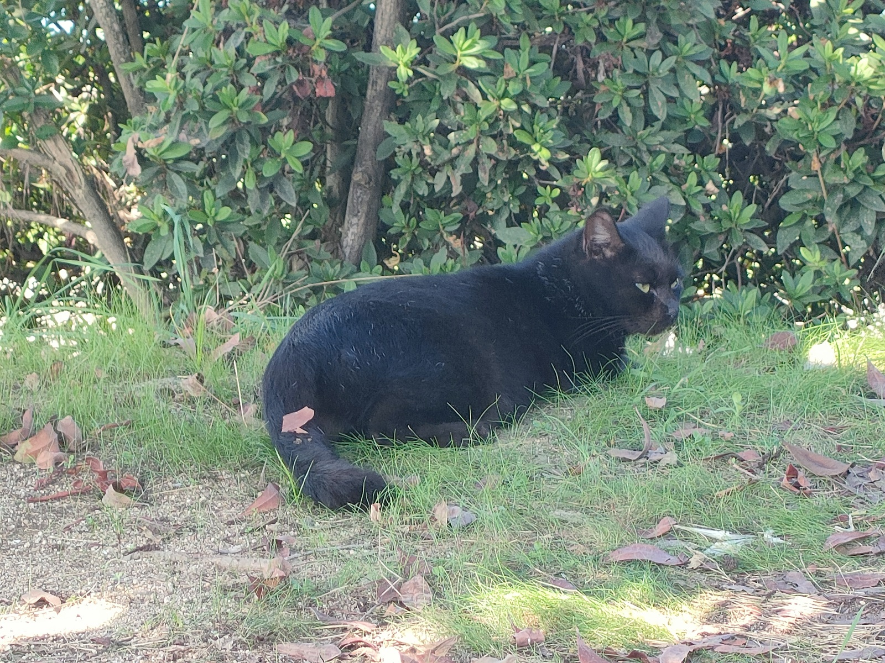

0014 ちょっと充電期間に入ります！

いつも「はなぽん」ブログをご覧いただき、ありがとうございます！
この度、私「はなぽん」は、長年温めてきた「自分自身を主人公にした新しい創作の世界」の実現に全力を注ぐため、しばらくブログの更新をお休みすることにしました。
2026年に入ってからは、伝統芸術を現代に繋ぐ、とても大切なプロジェクトに集中します。この期間は、自分の持てるすべての力を創作に注ぎ込み、みなさんが「楽しい！」「面白い！」と感じる新しい価値観を生み出したいと思っています。
またブログを再開するときは、パワーアップした「はなぽん」の活動と、新しい作品の成果をたっぷりご紹介しますね。
皆様と次に会える日を心待ちにしています！
はなぽんより